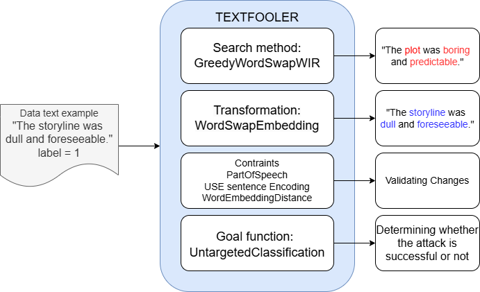

Adversarial Attacks Algorithm: TextFooler
After the victim model is determined, adversarial attacks are carried out using TextAttack, a library that provides various functions for generating adversarial examples. These attacks require several key components:
-
Goal Function: determines the goal of the attack, for example, making incorrect predictions.
-
Search Method: searches for words that have the most influence on the model’s predictions.
-
Transformation: replaces these words with synonym candidates to form adversarial examples.
-
Constraints: ensures that the modifications do not change the main meaning of the text.
This study uses the TextFooler attack recipe, which has been proven to reduce the accuracy of modern NLP models such as BERT and RoBERTa, while maintaining the context and sentence structure.
TextFooler (reimplemented in TextAttack) consists of:
-
GreedyWordSwapWIR (search method): sorts words based on their level of importance.
-
Untargeted Classification (goal function): generates predictions other than the original label.
-
WordSwapEmbedding (transformation): replaces words based on embedding so that the meaning remains consistent.
-
Constraints: ensure that the attack results are semantically and grammatically valid, including Word Embedding Distance, Part-of-Speech Match, and Sentence Similarity (USE).
As an illustration, the sentence “The storyline was dull and foreseeable” with the initial label “1” is attacked by replacing important words with synonyms. If the model’s prediction changes, the attack is considered successful.
This project tests two scenarios:
-
The original TextFooler with default components.
-
A modified TextFooler, where the transformation component is replaced with a BERT-based word swapper to evaluate BERT’s effectiveness in synonym selection.